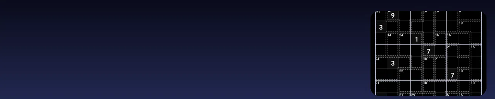
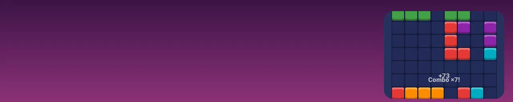
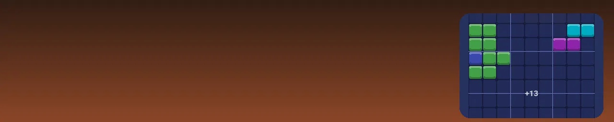

Sudoku with a jazz soul / Sudoku su džiazo siela
Calm logic puzzles, no rush. / Rami logikos galvosūkiai be skubos.
Killer Sudoku, next level / „Killer“ sudoku – kitas lygis
Cages, sums and pure logic. / Narvai, sumos ir gryna logika.
A new Sudoku every day / Naujas sudoku kiekvieną dieną
Daily challenge and streaks. / Dienos iššūkis ir serijos.
Stuck? Learn the technique / Užstrigai? Išmok metodą
Hints that teach, not just solve. / Užuominos, kurios moko.

Night theme for late puzzles / Tamsi tema vakariniams galvosūkiams
Easy on the eyes after dark. / Malonu akims sutemus.
Fit blocks. Clear lines. / Dėliok blokus, valyk eilutes
Easy to start, hard to put down. / Lengva pradėti, sunku nustoti.
Easy to start / Lengva pradėti
Drag, drop and watch lines vanish. / Tempk, padėk ir stebėk, kaip dingsta eilutės.

Chase your best score / Siek rekordo
Chain combos for big points. / Grandinėk kombinacijas ir rink taškus.
Relax in Zen mode / Atsipalaiduok Zen režimu
No pressure, just blocks. / Jokio spaudimo, tik blokai.

Blocks meet Sudoku / Blokai ir sudoku kartu
Try the 9×9 mode. / Išbandyk 9×9 režimą.